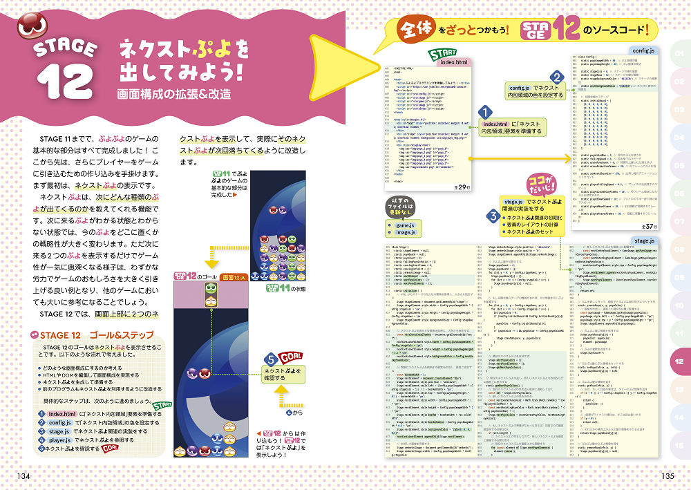

『ぷよぷよプログラミング』という書籍を出版しました。本日 2025 年 8 月 8 日が発売日となります！

すぐわかる！ ぷよぷよプログラミング SEGA公式ガイドブック
「ぷよぷよ」ゲームをゼロから完成させるまでの道のりを、一冊の本の中で解説しております。ぜひお手にとって頂けましたら幸いです。
発売記念イベントのお知らせ
六本木蔦屋さんにて 8 月 11 日(月・祝)に発売記念イベントを開催いたします。
- 第一部 10時開始（9時45分開場）
- 第二部 11時30分開始（11時15分開場）
チケット料金は 2,420 円（書籍代）、書籍を買って頂く形となります。ぷよぷよeスポーツのぴぽにあプロのプレイの後で、私のリアルタイムコーディングを披露する予定です。一発勝負のコーディングになりますので、お近くにお住まいの方は是非ご参加頂いて、 現地で私がバグを出してワタワタしている ところを笑いに来ていただければ大変光栄です。
https://store.tsite.jp/roppongi/event/business/48796-2018140724.html
出版に至る前
5 年ほど前に、セガさんより「JavaScript でぷよぷよを制作するという中高生向けの教育コンテンツを作りたいのだけれど、プログラムコードを書いてもらえないか？」という打診を頂きました。以前ニコニコ動画で公開していた「【プログラミング】テトリスを1時間強で作ってみた【実況解説】」という動画がきっかけになりお声がけを頂いたと聞いております。
その結果、「ぷよぷよプログラミング」というコンテンツが生まれました。セガさんの尽力もあり、コンテンツ自体をとても高く評価していただきました。青森の「ぷよりんご」など、このコンテンツをベースに改造されてバズったゲームも多く登場しました。ありがとうございました！
そしてその後、私が「ニコニコプログラミング」という名前で YouTuber をやっていたら、技術評論社の編集の方から「書籍化しませんか？」という打診を頂きました。そこで私の方から「ぷよぷよプログラミング」の書籍化を提案した形で、今回の企画が進行しました。
本に込めた思い
この本は、 自分が中学生・高校生の時にほしかった書籍 、というコンセプトで執筆しております。
自分が小学生・中学生の頃、「マイコン BASIC マガジン」（通称ベーマガ）という雑誌がありました。その雑誌には BASIC という言語で書かれた読者投稿のゲームプログラムが大量に掲載されており、まず私達はゲームを遊ぶためにそのプログラムコードを自分のコンピュータに打ち込みました。当時はインターネットもなく、フロッピーディスクは雑誌のおまけには少し不向きだった、そのような時代です。「写経」と呼ばれるのですが、ベーマガを楽しむために、ただひたすら雑誌のコードを打ち込んでいました。
そうしているうちに、自分でゲームを改造したくなります。無敵にしたい、デモ画面を作りたい、もっと難しくしたい、新しいルールを追加したい、そのようなモチベーションが次々と湧いてきて、既存の完成品のコードを編集するようになります。私達の世代は、そのような形でプログラムを学んだ人が大勢おります。
時代の流れでベーマガは休刊になりました。インターネットのおかげで今の若い人たちは優れたプログラミング・コンテンツに囲まれており、また世界の第一人者とも github などで交流するチャンスが近くにあります。プログラミングを学ぶ方々にとって、素晴らしい環境だと思います。最近の若い方々のレベルは、自分が若い頃に比べて間違いなく高いなと思うことが多いですね。
そんな中、本書はすべてのソースコードを本に載せております。それも必要に応じて何度も何度も掲載しております。各章の扉ページにはその章で編集するすべてのソースコードを掲載しており、また本文中でも編集箇所をすべて示しています。

これは、懐古主義として「写経」を勧めているわけではありません。中学生、高校生にとって、自室にパソコンがなく、限られた時間しかパソコンを触れないというような状況は今でも普通にあり得ると思います。プログラミングに強い興味を持っていても、実際に触ることのできる時間は限られており、それ以外の時間は周辺情報でしか学べない、という環境にいる方に、可能な限り最大限の学習効率を提供したいという思いを持って、この本を構成しました。
正直に言うと、ぷよぷよはプログラミング難易度的にかなり難しいゲームです。リアルに動くぷよ、回転の制御、4 つ繋がったら消える処理などなど、ある程度ゲームを作るのに慣れた方でも実装が難しいでしょう。しかしだからこそ、紙面で可能な限りの解説を入れ、ソースコードを省略せず紙面ですべてのソースコードを確認できる状態を担保し、紙面を言ったり来たりしながらでも理解できるようにする、そういったデザインが生きるだろうと考えました。
プログラミングをしてみたいという方にとって、ゲームを作ってみたいというモチベーションは一般的だと思います。本書がその思いを後押しし、その方にプログラミングの可能性や楽しさをお伝えできれば、そしてこの本がきっかけでよりプログラミングを楽しんでもらうようになれば、著者としてこれ以上の喜びはありません。
プログラミング経験者の皆様にもオススメ
もちろん、初心者ではないプログラマの皆様にも胸を張っておすすめします。普段ゲームプログラムを書いていらっしゃる方は少ないでしょうから、ゲーム独特のテクニックなどは参考になるのではないかと思います。また JavaScript ならではの、DOM を使ったゲーム画面の構築は面白いと思います（本書では Canvas は使っていません。迷ったのですが…）。
JavaScript 初学者のために、かなり独特なプログラムを書きました。例えばオブジェクト指向は難しかろうと思い、Class を完全に namespace と割り切って使っていて、一切インスタンス化していません。他にもいくつか割り切った設計をしているところが多いですが、もし気づかれたらその背景を考えていただければ面白いかと思います。
普段のコーディングとは大きく違う世界だと思うので、その別世界における設計やデザインを見て頂くだけでも色々と刺激になると思います。
最後に
本書はセガの関係者の皆様のご尽力の元に実現したプロジェクトです。セガの皆様のプログラミング教育にかける熱意には感服します。各地でイベントや授業を開催されるたびに細かく改良され、そのノウハウをご共有頂けたことに感謝しております。ありがとうございました。
また本書のレビューにご参加頂きました、渋川よしきさん、杉本雅広さん、Daigoさん、中嶋謙互さん、古川陽介さん、ありがとうございました！